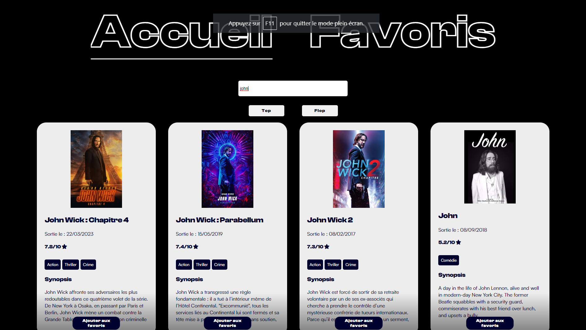

Site internet permettant de trouver rapidement un film, de
découvrir sa note, son synopsis, son genre …
Il est par la suite possible de classer ses films par leurs
notes.
On peut également ajouter un film dans nos favoris pour
facilement les retrouver.